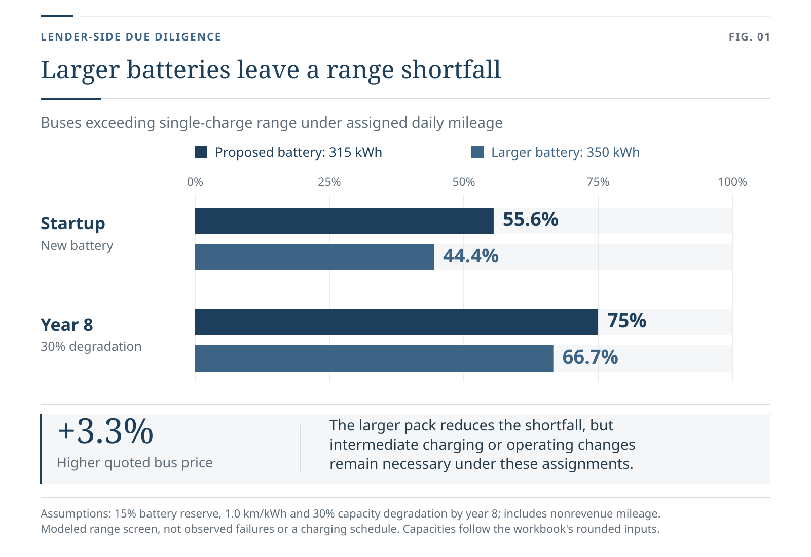

Lender-Side Due Diligence
Electric Bus Fleet & Charging Infrastructure Lease
Mandate
Retained by a project financier to evaluate a regional transit operator's financing request, including regulatory compliance, site control, and operating assumptions.
Outcome
The financier declined to proceed.
Analysis
Established that the land-use approval submitted to support the financing request had expired under its stated validity period, that the municipal certificate showed the proposed use was not permitted, and that the property was subject to three reservations for future public taking. Tested the model under three battery-performance assumptions and showed that the proposed fleet could not meet the regulator's service requirements even under the most favorable energy-consumption assumption. Identified an internal contradiction between the cash-flow model's assumptions about revenue receipts and regulatory compliance.

View full size
{kind=link}
{kind=link}
{kind=link}
{kind=link}
{kind=link}